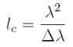
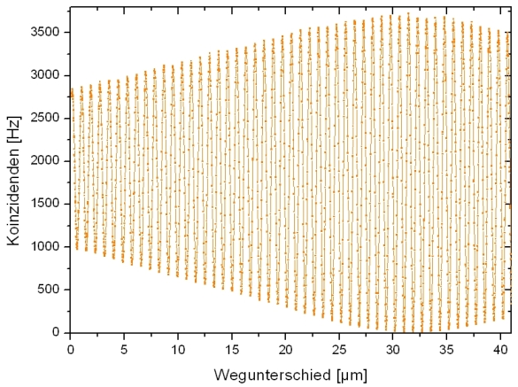
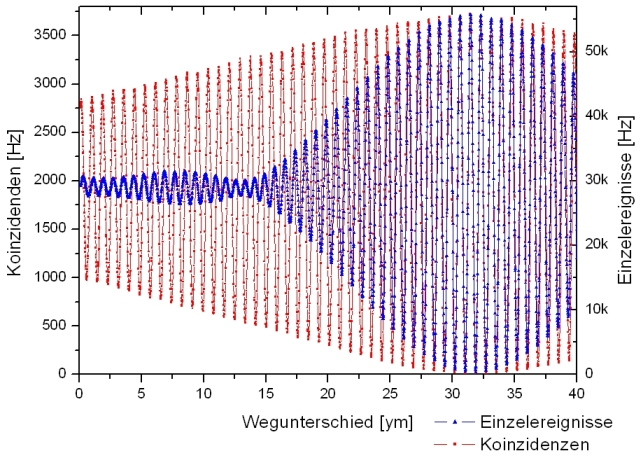
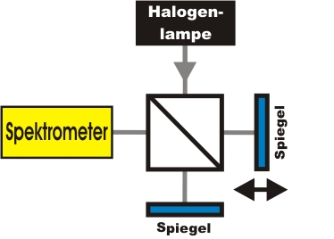

Interference chapter 5:
Coherence, energy correlation and white light
In the following chapter, the coherence length of single photons is determined experimentally using an interferometer. In the second paragraph, the connection between coherence and energy correlation is shown. The last paragraph deals with the interference of bright light with low coherence length.
Interference and coherence
For the interference experiment with single photons, an announced single photon source is employed (pic. 1). The basis of the single photon source is the twin photon source (PDC) which sends out single photons in pairs. One of the photons (left) is used for triggering, the other photon (right) is coupled into a glass fibre cable and lead to the interferometer. For the experiments in the previous chapters only those results were evaluated where there were both a trigger photon and a photon in the interferometer (coincidence). The measurings in the interferometer can, however, also be evaluated without the trigger photon. There is an interference pattern visible as well, which can be explained with a classic electromagnetic wave, though.
pic. 1 Announced single photon source. Left: sketch with filters, right: experiment
Interference can only be observed if the coherence length of the photons is greater than the path length difference in the interferometer. Whenever the path length difference equals the coherence length of the single photons, the visibility of interference becomes less (pic. 2). If the path length difference is greater than the coherence length, interference can no longer be observed. The coherence length of the photons in the interferometer is ca. 60µm with a band pass filter of 810±10nm. This value can be determined experimentally via the amplitude of the symmetric measuring curve in picture 2, or theoretically with the following formula:
.

pic. 2: Decreasing visibility of interference (filter 810±10nm).
The maximum path difference of the translation stage is 40µm.
Interference, coherence and energy correlation
The twin photon source sends photons in pairs with a wave length band of up to ca. 80nm. The detected wave length range can be limited with optical band pass filters in front of the detectors. The more narrow the filter, the longer the coherence length of the announced photons. A coherence phenomenon between the trigger photon and the photon in the interferometer is visible in picture 3. Both curves come from the same measurement and have merely been evaluated differently. The blue curve was evaluated without the respective trigger photon. The unannounced photons in this case passed through a filter with an amplitude of 40nm (pic. 3 single measurement). The coherence length of the unannounced events is ca. 16µm. For the red curve in pic. 3, only the events announced via the trigger detector were evaluated. In front of the trigger detector there was a filter with an amplitude of 10nm (pic. 3 coincidences). The coherence length of the announced photons is ca. 60µm and differs considerably from the coherence length of the single events. The coherence length of photons in the interferometer can be altered by evaluating it accordingly with the trigger detector. The phenomenon can be explained with energy conservation during the creation of the two photons. The energy of the two photons is always correlated. Experts call this energy or frequency correlation.

pic. 3: Different coherence length of photons in the same experiment
Blue curve: single events(Filter 800±40nm)
Red curve: coincidences (Filter Trigger: 810±10nm)
Interference of bright white light
Interference can also be observed with bright light in the interferometer. The light source used is a standard halogen lamp (thermic light), which has very low coherence length. A suitable detector would be the naked eye or a spectrometer (pic. 4). In video 1, the translation stage was moved by ca. 100nm/s and the respective spectrum was recorded. A clear interference of the individual wave length is visible.
Due to the low coherence length of a thermic light source, the process of white light interference can be employed for adjusting an interferometer. White light interferometry is used in industry for precise length measurings. Another example for using white light interferometry would be coherence tomography, where three-dimensional structures can be recorded.

pic. 4: Interferometer with bright light white and spectrometer
|
|
Video 1: spectrum
of white light behind a Michelson-Interferometer
x-axis: wave length : 450-930nm, y-axis: intensity
The translation table is moved by ca. 100nm/s
Original data from the experiment: Interferenz, coherence and energy correlation
To chapter 6: Interference and diffraction at the double slit
Autor: P.
Bronner, Dezember 2008
Translation: G. Murphy